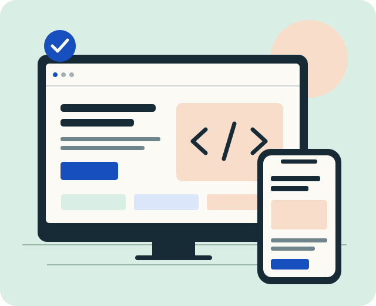

HTML5 · 90 MIN
De la idea a la estructura
Organiza una página con encabezados, secciones, enlaces y un formulario con sentido.
Te llevas: una página semántica.
Elegir taller de HTMLINICIATIVA ACADÉMICA · NIVEL INICIAL
Aprende a transformar una idea en una página que funcione en cualquier pantalla y que todas las personas puedan usar.
Propuesta de formación gratuita · Aprende a tu ritmo

ELIGE POR DÓNDE EMPEZAR
Tres experiencias prácticas para construir, dar forma y mejorar tu sitio.
3 talleres disponibles.
HTML5 · 90 MIN
Organiza una página con encabezados, secciones, enlaces y un formulario con sentido.
Te llevas: una página semántica.
Elegir taller de HTMLCSS · 120 MIN
Combina colores, espacios y Grid para pasar del móvil al escritorio sin perder claridad.
Te llevas: un diseño responsivo.
Elegir taller de CSSACCESIBILIDAD · 90 MIN
Revisa teclado, contraste y mensajes de error para eliminar barreras en la experiencia.
Te llevas: una lista de verificación.
Elegir taller de accesibilidadDEL CONCEPTO A LA PRÁCTICA
Necesitas un computador, un navegador y un editor de texto. La ruta está pensada para estudiantes que comienzan a crear para la web.
Identifica qué hace que una página sea clara y fácil de recorrer.
Resuelve un reto breve con HTML, CSS y JavaScript sin bibliotecas externas.
Recorre el sitio con teclado, cambia su tamaño y documenta lo aprendido.
PARA SEGUIR EXPLORANDO
TU SIGUIENTE PASO
Elige el taller que te interesa y prueba el formulario de participación.
Demostración académica. No constituye una inscripción real. Los datos se validan en tu navegador; no se envían ni se guardan. Usa datos de prueba.
ANTES DE EMPEZAR
No. La propuesta comienza con estructura HTML y avanza hacia diseño y accesibilidad. Basta con manejar archivos y navegar por internet.
No. Este sitio es un proyecto académico que presenta una propuesta formativa. No anuncia una convocatoria institucional ni certificaciones reales.
Sí. Usa Tab y Mayús + Tab para recorrer enlaces y controles; Enter para activar enlaces; Enter o Espacio para activar botones. Escape cierra el menú móvil.